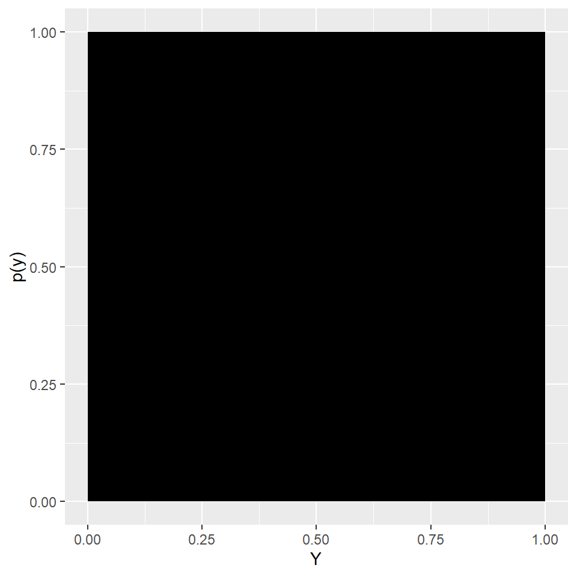
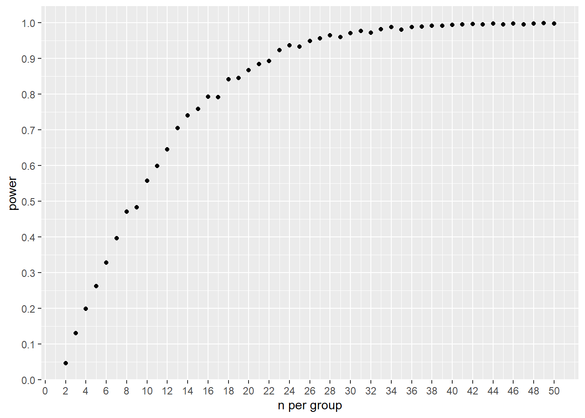

Chapter 11 Reproducible Data Munging in R
Data munging is the process of taking data from one source(s), working it into a condition where it can be analyzed. Because every data set will differ every data munge will be custom.
Data munging is a bit like organic chemistry. You know the chemical you want to create. You know the starting materials that you have on hand. You know the reactions and the intermediates that you’ll need to produce to get that final product.
Here’s one example of the munging process. What we want to achieve in this exercise, the final product, is to get some graphical views in order to visualize the data structure along with some summary statistics.
We begin with some experimental data that’s a bit unstructured. Our tools include an data import function (datapasta) and a handful of functions in the tidyverse package.
Not especially how every transaction with the data is recorded. If you took each of these code chunks and ran them on your machine, you should get identical results. That’s reproducibility.
11.1 Jaxwest7 glucose data
library(datapasta)
library(tidyverse)The Jaxwest7 data set is a Jackson Labs experiment conducted in a mouse strain serving as a model for type 2 diabetes. Animals fed a glucose-rich diet develop a type 2 diabetes syndrome. The experiment tests whether the antidiabetic drug rosiglitazone suppresses disease development.
Half the subjects receive the antidiabetic drug, the other receive vehicle as placebo.The syndrome is assessed by measuring two response variables: body weight and blood glucose concentrations. There are two explanatory variables: day of study and drug treatment.
The experimental design is therefore multivariate (weight, blood glucose) two-factor (drug treatment, day) ANOVA with repeated measures from the replicates.
The purpose of this chapter is to illustrate how to retrieve and process data in R, focusing only on the blood glucose response variable within the Jaxwest7 data set.
Going through this exercise will illustrate how to prepare data for statistical analysis.
11.1.1 Inspect the Jaxwest7 data
Download the Jaxwest7.xls file from the mouse phenome database to your machine and open it with Excel (or some other spreadsheet software).
Go to the BloodGlucoseGroups tab.
This is readable, but what hits you is the sheet’s complexity. In fact, this sheet illustrates what unstructured data looks like.
Almost every column has cells containing multiple types of values. The first 8 rows have various descriptor text, including a logo! Rows 9-14 have some other definitions. Scroll way over to the right and some graphs pop up. The data we are interested in are in rows 15 to 42, and in columns F to S. Each of those columns has two column names, a date and a day. Thus, if a column in this array is a group of variable values, then each variable has two names! There should be only 1.
Columns T and U have several missing values, because those animals were used for autopsy. We’re going to have to ignore their response values. Columns 43 to 146 are missing entirely! Below the array are some summary statistics on the columns above, which represent different variables.
This is not a spreadsheet that can or should be imported whole scale directly into R. Instead, we need to grab only the data we need. Then we’ll use R to structure it properly.
11.1.2 Munge the glucose concentration data into R
Let’s get the glucose concentration data into R, and create a “long”" data frame format, where every column represents a variable and every row is a case (or a subset of a case). We’ll have to create some row and some column variable names.
What do we have to work with? What do we need to create?
Glucose concentrations were measured twice per day on odd-numbered days plus day 12. Each column represents a blood draw session. This was done on each of 16 animals. Half were in a placebo group, half were in a drug group. I’m going to omit day 15 due to the NA values (those mice were harvested for autopsy, and so day 15 breaks the time series).
Let’s make a proper R data frame out of this data.
Open up an R script file and follow along.
Step 1: Deal with cell F21. It’s value in the excel spreadsheet is “Hi”, a character value rather than a numeric (it must have tested out-of-range for the assay). We have two options: Assign it an NA value, or impute. Since this is a related-measures time series with multiple other glucose measurements for that specific replicate, we’ll impute by using the average of all these other measurements.
Calculate the value that will be imputed:
#Use datapasta to paste in vector values. Calculate their mean. Then impute value for cell F21 in original data set by exchanging the value "Hi" with the mean produced here.
F21 <- mean(c(449L, 525L, 419L, 437L, 476L, 525L, 499L, 516L, 485L, 472L, 535L, 500L, 497L)
); F21## [1] 487.3077Ideally, you’d import the data with the “Hi” value and fix it in R, to have reproducible record. Doing so would involve walking several confusing munging steps into the weeds, which are beyond the scope of this chapter.
Step 2: Fix the F21 cell in the spreadsheet, then copy the array F15:S42 to the clipboard. This gives 14 columns and 16 rows of glucose data. All values are numeric and represent the same variable: glucose concentration.
Use the datapasta package addin for this procedure. Create an object name, pasting in as a tribble provides the cleanest route.
gluc <- tibble::tribble(
~V1, ~V2, ~V3, ~V4, ~V5, ~V6, ~V7, ~V8, ~V9, ~V10, ~V11, ~V12, ~V13, ~V14,
136L, 270L, 162L, 165L, 192L, 397L, 172L, 148L, 291L, 239L, 192L, 172L, 235L, 153L,
345L, 518L, 429L, 413L, 456L, 487L, 468L, 419L, 507L, 559L, 420L, 415L, 511L, 464L,
190L, 301L, 311L, 361L, 398L, 465L, 388L, 392L, 453L, 421L, 355L, 381L, 394L, 444L,
434L, 504L, 453L, 392L, 350L, 400L, 458L, 387L, 342L, 368L, 355L, 429L, 373L, 501L,
424L, 486L, 447L, 417L, 496L, 484L, 468L, 423L, 472L, 507L, 458L, 456L, 519L, 570L,
170L, 208L, 134L, 129L, 147L, 141L, 241L, 128L, 162L, 163L, 222L, 438L, 307L, 252L,
487L, 449L, 525L, 419L, 437L, 476L, 525L, 499L, 516L, 485L, 472L, 535L, 500L, 497L,
218L, 273L, 254L, 265L, 338L, 386L, 287L, 236L, 347L, 235L, 432L, 450L, 509L, 326L,
179L, 184L, 124L, 107L, 108L, 149L, 142L, 143L, 112L, 233L, 113L, 137L, 106L, 150L,
260L, 381L, 174L, 140L, 132L, 138L, 164L, 137L, 122L, 140L, 102L, 174L, 120L, 135L,
115L, 191L, 132L, 132L, 169L, 158L, 129L, 120L, 122L, 157L, 94L, 141L, 120L, 166L,
526L, 517L, 465L, 394L, 310L, 269L, 213L, 185L, 145L, 201L, 131L, 258L, 114L, 160L,
325L, 252L, 203L, 158L, 135L, 162L, 164L, 181L, 150L, 177L, 162L, 192L, 170L, 162L,
329L, 296L, 212L, 159L, 156L, 200L, 139L, 143L, 164L, 150L, 119L, 193L, 148L, 188L,
230L, 414L, 408L, 179L, 432L, 288L, 163L, 240L, 185L, 208L, 138L, 208L, 153L, 140L,
204L, 120L, 138L, 139L, 157L, 122L, 163L, 168L, 164L, 128L, 129L, 218L, 135L, 182L
)Notice how R coerces unique variable names for each column. At this point, they are much cleaner than the column names available in the spreadsheet.
Step 3: Create a column for the ID variable. There are 16 replicate mice. We’ll given them each a unique ID name.
ID <- LETTERS[1:16]Step 4: Create a column for the treatment variable. The first 8 replicates received vehicle (placebo). The second 8 rosiglitazone.
treat <- c(rep("placebo", 8), rep("rosiglit", 8))Step 5: Add these columns to the gluc tribble
gluc <- add_column(gluc, ID, treat, .before=T)Step 6: Now would be a good time to convert from a wide to a long table format. We use the gather function in the tidyverse package for that.
gluc <- gather(gluc, V, glucose, -ID, -treat)Step 7: Replace the variable V with two variables.
Note how we created a new variable, V, in this move. As you can see, the gather function successively “gathers” all the glucose values from columns V1, V2,…, V14 into a single column under the variable V. It’s a very, very slick and useful function that’s analogous to an excel pivot table (but much easier to execute).
The V variable, however, is ambiguous. The 14 levels of V actually represent two variables. The odd numbered represent the early day blood draw, while the even numbered represent the late day draw. Meanwhile, V1 and V2 represent day one, V3 and V4 represent day three,…, and V13 and V14 represent day eleven.
We need a single variable column to represent early or late draw, and another variable column to represent the seven days of the study.
There are two levels for the draw variable, and seven levels for the day variable. These repeat in a 16 and 32 unit pattern, respectively.
draw <- rep(
c(rep("early",
16),
rep("late",
16)
),
7
)
day <- rep(
c(1, 3, 5, 7, 9, 11, 12),
each =32)Step 8: Update the gluc table to incorporate these new variables.
gluc <- add_column(gluc, draw, day, .before=T)
gluc## # A tibble: 224 x 6
## draw day ID treat V glucose
## <chr> <dbl> <chr> <chr> <chr> <int>
## 1 early 1 A placebo V1 136
## 2 early 1 B placebo V1 345
## 3 early 1 C placebo V1 190
## 4 early 1 D placebo V1 434
## 5 early 1 E placebo V1 424
## 6 early 1 F placebo V1 170
## 7 early 1 G placebo V1 487
## 8 early 1 H placebo V1 218
## 9 early 1 I rosiglit V1 179
## 10 early 1 J rosiglit V1 260
## # ... with 214 more rowsStep 9: Remove the V variable column from the tribble. First verify that the correct levels for draws and days correspond to the correct levels of V. After that, the V column has no use so it can be removed.
gluc <- select(gluc, -one_of("V"))
gluc## # A tibble: 224 x 5
## draw day ID treat glucose
## <chr> <dbl> <chr> <chr> <int>
## 1 early 1 A placebo 136
## 2 early 1 B placebo 345
## 3 early 1 C placebo 190
## 4 early 1 D placebo 434
## 5 early 1 E placebo 424
## 6 early 1 F placebo 170
## 7 early 1 G placebo 487
## 8 early 1 H placebo 218
## 9 early 1 I rosiglit 179
## 10 early 1 J rosiglit 260
## # ... with 214 more rowsLet’s fix one subtle issue. Each of the variables draw, day, ID and treat should all be interpreted as factor objects. But the data table interprets them as characters (or dbl in the case of day). Some statistical tests need to read these as factors.
cols <- c("draw", "day", "ID", "treat")
gluc[cols] <- lapply(gluc[cols], factor)11.2 Explore the Jaxwest7 data
Histograms are a great way to get a first look at data sets with a reasonably healthy number of values, such as this one. We expect glucose to be a normally-distributed variable. Here it’s clearly bi-modal, perhaps representing two normally-distributed treatment groups?
ggplot(gluc)+
geom_histogram(aes(glucose))
By coloring the two groups, the story grows a bit more complex.
ggplot(gluc,
aes(fill=treat)
) +
geom_histogram(aes(glucose))
We can also look at the data as scatter plots, by draw, treatment and time. This view shows the time series for each replicate. Looking at the data atomically, in this way, gives tremendous insights!
ggplot(gluc,
aes(day,
glucose,
group=ID,
color = treat)
) +
facet_wrap(~draw) +
geom_point() +
geom_line() Now create some summaries. Here’s a plot of the means and standard deviations of the groups. The
Now create some summaries. Here’s a plot of the means and standard deviations of the groups. The stat_summary function is a bit quirky to work with, but worth learning.
ggplot(gluc,
aes(day,
glucose,
color=treat
)
) +
facet_wrap(~draw) +
stat_summary(fun.data = "mean_sdl",
fun.args = list(mult = 1),
geom ="pointrange") +
stat_summary(fun.y = mean,
geom = "line",
aes(group=treat)
) ## Warning: Computation failed in `stat_summary()`:
## 'what' must be a function or character string
## Warning: Computation failed in `stat_summary()`:
## 'what' must be a function or character string
Now here’s a summary of all the replicate values in tabular form.
gluc %>%
group_by(day, treat, draw) %>%
dplyr::summarise(mean=mean(glucose),
sd=sd(glucose),
n=length(glucose))## # A tibble: 28 x 6
## # Groups: day, treat [?]
## day treat draw mean sd n
## <fct> <fct> <fct> <dbl> <dbl> <int>
## 1 1 placebo early 300. 138. 8
## 2 1 placebo late 376. 125. 8
## 3 1 rosiglit early 271 126. 8
## 4 1 rosiglit late 294. 134. 8
## 5 3 placebo early 339. 146. 8
## 6 3 placebo late 320. 118. 8
## 7 3 rosiglit early 232 131. 8
## 8 3 rosiglit late 176 90.6 8
## 9 5 placebo early 352. 125. 8
## 10 5 placebo late 404. 114. 8
## # ... with 18 more rowsThe more you look at the early v late draws, both graphically and in the table above, the more you don’t have a problem treating those as technical or pseudo replicates. Perhaps it was a decision made ahead of time at Jackson? We’ll declare the early and late draws on the same day as not independent. Averaging them leaves will leave us with a tighter estimate of daily blood glucose concentrations, which is nice.
The code below averages the early and late draws to produce a single mean glucose value per replicate per time point.
gluc %>%
group_by(day, treat, ID) %>%
dplyr::summarise(mean=mean(glucose),
sd=sd(glucose),
n=length(glucose)
)## # A tibble: 112 x 6
## # Groups: day, treat [?]
## day treat ID mean sd n
## <fct> <fct> <fct> <dbl> <dbl> <int>
## 1 1 placebo A 203 94.8 2
## 2 1 placebo B 432. 122. 2
## 3 1 placebo C 246. 78.5 2
## 4 1 placebo D 469 49.5 2
## 5 1 placebo E 455 43.8 2
## 6 1 placebo F 189 26.9 2
## 7 1 placebo G 468 26.9 2
## 8 1 placebo H 246. 38.9 2
## 9 1 rosiglit I 182. 3.54 2
## 10 1 rosiglit J 320. 85.6 2
## # ... with 102 more rowsThe ‘mean’ column should be used as the final value for the glucose response variable, in statistical analysis. This is the right call. To leave the technical duplicates would be to flood the data set with undeserved degrees of freedom.
We’ll create a final, working table of the data now. It catalogs how each replicate behaved on each day, and which treatment it received.
glucFinal <- gluc %>%
group_by(day, treat, ID) %>%
dplyr::summarise(glucose=mean(glucose)
)
glucFinal## # A tibble: 112 x 4
## # Groups: day, treat [?]
## day treat ID glucose
## <fct> <fct> <fct> <dbl>
## 1 1 placebo A 203
## 2 1 placebo B 432.
## 3 1 placebo C 246.
## 4 1 placebo D 469
## 5 1 placebo E 455
## 6 1 placebo F 189
## 7 1 placebo G 468
## 8 1 placebo H 246.
## 9 1 rosiglit I 182.
## 10 1 rosiglit J 320.
## # ... with 102 more rowsBecause it has all of the replicate data, the glucFinal data table is what we would use for statistical testing.
If we published a figure from all of this, we’d create it from the glucFinal data table. The following would be the most appropriate because it is based on average technical replicates:
ggplot(glucFinal,
aes(x = day,
y = glucose,
color=treat
)
) +
stat_summary(fun.data="mean_sdl",
fun.args = list(mult = 1),
geom ="pointrange") +
stat_summary(fun.y = mean,
geom = "line",
aes(group=treat)) ## Warning: Computation failed in `stat_summary()`:
## 'what' must be a function or character string
And finally, here’s some summary stats on that final data set:
glucFinal %>%
group_by(day, treat) %>%
dplyr::summarise(n = length(glucose),
mean = mean(glucose),
median = median(glucose),
sd = sd(glucose),
sem = sd/sqrt(n),
min = min(glucose),
max = max(glucose))## # A tibble: 14 x 9
## # Groups: day [?]
## day treat n mean median sd sem min max
## <fct> <fct> <int> <dbl> <dbl> <dbl> <dbl> <dbl> <dbl>
## 1 1 placebo 8 338. 338. 128. 45.1 189 469
## 2 1 rosiglit 8 283. 300. 121. 42.8 153 522.
## 3 3 placebo 8 330. 378. 131. 46.2 132. 472
## 4 3 rosiglit 8 204 169. 106. 37.6 116. 430.
## 5 5 placebo 8 378. 403. 115. 40.6 144 490
## 6 5 rosiglit 8 193. 156 85.1 30.1 128. 360
## 7 7 placebo 8 352. 406. 132. 46.7 160 512
## 8 7 rosiglit 8 162. 158 27.8 9.83 124. 202.
## 9 9 placebo 8 379. 396 132. 46.7 162. 533
## 10 9 rosiglit 8 160. 160. 21.2 7.48 131 196.
## 11 11 placebo 8 386. 405. 98.5 34.8 182 504.
## 12 11 rosiglit 8 157. 164. 27.5 9.71 118. 194.
## 13 12 placebo 8 410. 428 117. 41.5 194 544.
## 14 12 rosiglit 8 147. 145. 16.0 5.66 128. 168Phew!